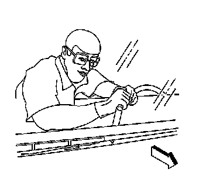
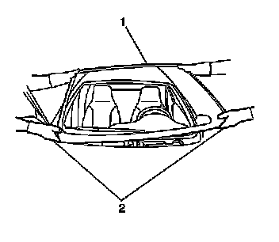
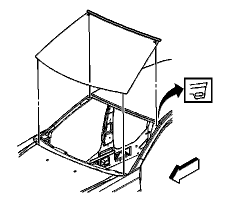
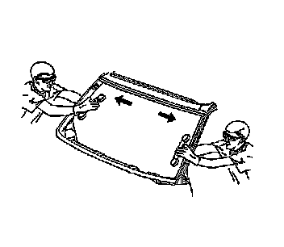

Windshield Replacement
Windshield Replacement
Tools Required
* J 24402-A Glass Sealant Cold Knife Remover
* J 39032 Stationary Glass Removal Tool
* J 25070 Heat Gun
* Urethane Adhesive Kit GM P/N 12346392 or Equivalent
* Isopropyl Alcohol or Equivalent
* Cartridge-type Caulking Gun
* Commercial-type Utility Knife
* Razor Blade Scraper
* Suction Cups
* Plastic Paddle
Removal Procedure
Important: Before cutting out a stationary window, apply a double layer of masking tape around the perimeter of the painted surfaces and the interior trim.
1. Open the hood.
2. Remove the windshield wiper arms. Refer to Windshield Wiper Arm Replacement (Windshield Wiper Arm Replacement) .
3. Remove the air inlet grille. Refer to Air Inlet Grille Panel Replacement (Service and Repair) .
Caution: If broken glass falls into the defroster outlets, it can be blown into the passenger compartment and cause personal injury.
4. Cover the following parts to protect from broken glass:
* The upper dash pad
* The defroster outlets and A/C outlets
* The seats and carpeting

5. Remove the windshield side reveal moldings. Refer to Windshield Side Reveal Molding Replacement (Windshield Side Reveal Molding Replacement) .
6. Remove the rearview mirror. Refer to Inside Rearview Mirror Replacement (UE1) (Inside Rearview Mirror Replacement (UE1))Inside Rearview Mirror Replacement (DD7, DD8) (Inside Rearview Mirror Replacement (DD7, DD8)) .
7. Remove the interior windshield garnish moldings. Refer to Windshield Pillar Garnish Molding Replacement (Service and Repair) .

Caution: Refer to Glass and Sheet Metal Handling Caution .
Important: The upper windshield reveal molding is a one-piece molding and fills the cavities between the body and windshield.
The upper windshield reveal molding cannot be reused if the molding is stretched or damaged.
8. Using a utility knife, carefully cut the upper flap (1) of the windshield reveal molding in order to access the urethane adhesive bead.
9. Prior to cutting the urethane adhesive bead, apply 2 layers of masking tape on the body next to the windshield edge.

Important: Keep the cutting edge of the tool against the window.
10. Separate the urethane adhesive from the window.
* Leave a base of urethane on the pinch-weld flange.
* The only suitable lubrication is clean water.
* Use J 24402-A , J 39032 or equivalent in order to remove the window.

11. Remove the bottom of the window from the urethane adhesive using a long utility knife or similar tool. Keep the cutting edge of the utility knife against the glass. Do this from inside the vehicle.

12. With the aid of an assistant, remove the windshield (1) from the vehicle.
Installation Procedure

1. Position the locator pins on the window into the upper sheet metal slots in order to hold the stationary window in place in a cross-car position.

2. Install the stationary window into the opening. Refer to Adhesive Installation of Stationary Windows (Adhesive Installation of Stationary Windows) .
3. Install the windshield side reveal moldings. Refer to Windshield Side Reveal Molding Replacement (Windshield Side Reveal Molding Replacement) .
4. Install the rearview mirror. Refer to Inside Rearview Mirror Replacement (UE1) (Inside Rearview Mirror Replacement (UE1))Inside Rearview Mirror Replacement (DD7, DD8) (Inside Rearview Mirror Replacement (DD7, DD8)) .
5. Install the interior windshield garnish moldings. Refer to Windshield Pillar Garnish Molding Replacement (Service and Repair) .
6. Install the air inlet grille. Refer to Air Inlet Grille Panel Replacement (Service and Repair) .
7. Install the windshield wipers arms. Refer to Windshield Wiper Arm Replacement (Windshield Wiper Arm Replacement) .
8. Remove the double layer of masking tape around the perimeter of the painted surfaces and the interior trim.
9. Close the hood.